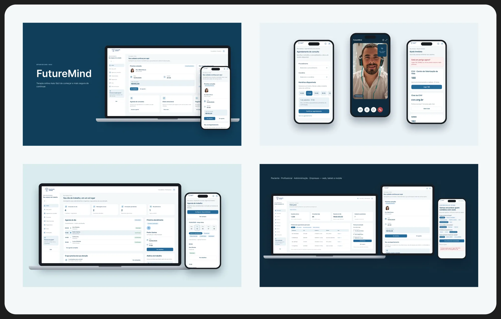
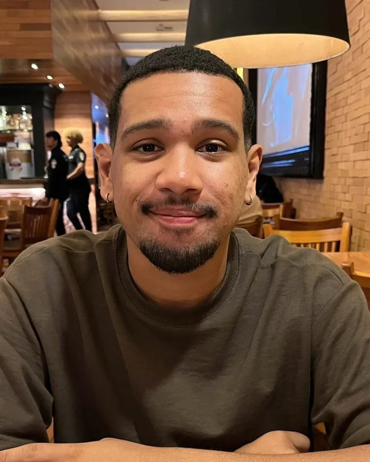
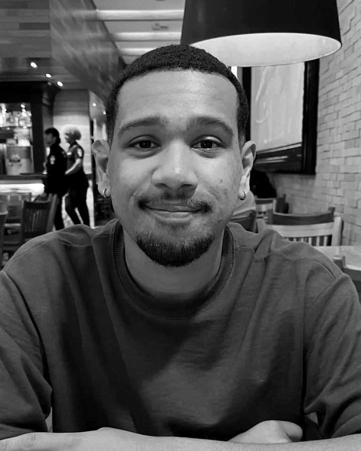

ManassésMarcelino.
Pesquiso, organizo fluxos e desenho interfaces que fazem sentido pra quem usa.
UX/UI na Dígitro, em sistemas de investigação e de backup.
Para vagas de UX/UI Designer júnior.
Trabalhos selecionados
04 projetosFutureMind
Terapia online desenhada a partir de uma pesquisa com 50 psicólogos. Melhor projeto do curso.
Ver estudo de caso →
02SKYNS
E-commerce de skincare personalizável, com uma máquina de IoT que prepara a fórmula.
Ver estudo de caso → 03
03
Dígitro Backup
Dashboard B2B com alertas no topo e erros que dizem o que fazer.
Ver estudo de caso → 04
04
IntelleTotum
A aba de análise do Guardião: milhares de registros viram padrões e pistas.
Ver estudo de caso →
Primeiro o problema.
Depois a tela.
Como eu trabalhoEntendo o negócio, quem usa e as restrições antes de propor qualquer coisa.
Entrevistas · Questionários · Benchmarking · JornadasTransformo o que aprendi em públicos, fluxos e no que cada tela precisa resolver.
Fluxos · Arquitetura · WireframesInterfaces, componentes e protótipos que nascem juntos e são testados cedo.
Interfaces · Design system · Protótipos · TestesEstados, erros e especificações documentados, pra tela sair do Figma como foi pensada.
Estados e erros · Especificação · HandoffUso IA pra pesquisar, explorar alternativas e prototipar mais rápido. A decisão final é sempre minha.
Sobre
De onde eu vim

Entrei na tecnologia por estratégia e fiquei por paixão. No design encontrei o que mais gosto: fazer as perguntas certas e achar resposta pros problemas.
Comecei com uma bolsa no técnico em Desenvolvimento de Sistemas do SENAI/SC, porque não queria sair do ensino médio sem uma profissão. Na Softplan conheci a tecnologia por dentro, e no design achei um jeito mais criativo de resolver problemas.
O que mais elogiam em mim é a comunicação: com o time, com quem usa e com quem vai desenvolver. Hoje curso Design na UNISUL, com formatura prevista em 2028.
Jovem aprendiz em People Operations.
Estágio em design gráfico, wireframes e protótipos.
Estágio em UX/UI: sistemas corporativos, design system e handoff.